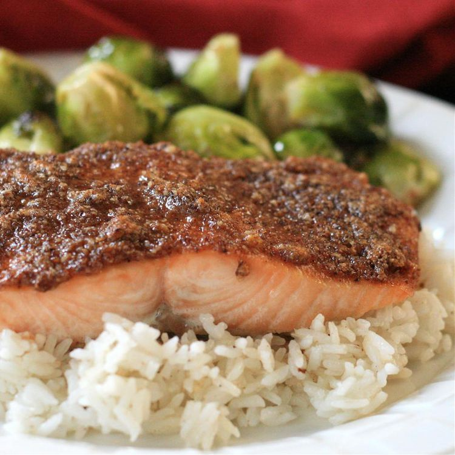

Odin Paleo Recipes

Paleo Pecan-Maple Salmon
This incredible dish sounds fancy, but is actually quite simple.
It's also a great go-to for those on the paleo diet. It's both hearty and sweet,
while also keeping things healthy. It's sure to satisfy those cravings!
Note: Be careful not to overcook the salmon! Once it flakes easily (as
described in Step 4), it's time to remove it from the oven.
Ingredients:
- 4 (4 ounce) fillets salmon
- Salt and ground black pepper to taste
- ½ cup pecans
- 3 tablespoons pure maple syrup
- 1 tablespoon apple cider vinegar
- 1 teaspoon smoked paprika
- ½ teaspoon chipotle pepper powder
- ½ teaspoon onion powder
Steps:
- Step 1 (under 5 mins): Place salmon filets on a baking sheet
and season with salt and black pepper.
- Step 2 (5 mins): Combine pecans, vinegar, maple syrup,
paprika, onion powder, and chipotle powder in a food processor and pulse until texture
is crumbly. Spoon pecan mixture on top of each filet, coating the entire top surface.
- Step 3 (2-3 hours): Refrigerate coated salmon, uncovered.
- Step 4 (10 mins): Preheat oven to 425 degrees Fahrenheit.
- Step 5 (12-14 mins): Bake salmon until fish flakes easily with
a fork.